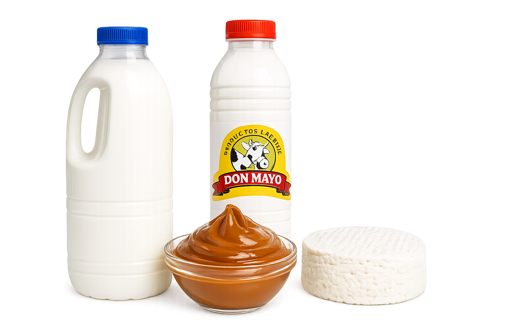
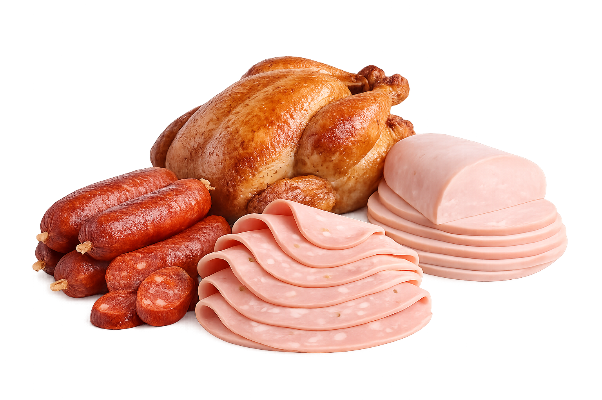
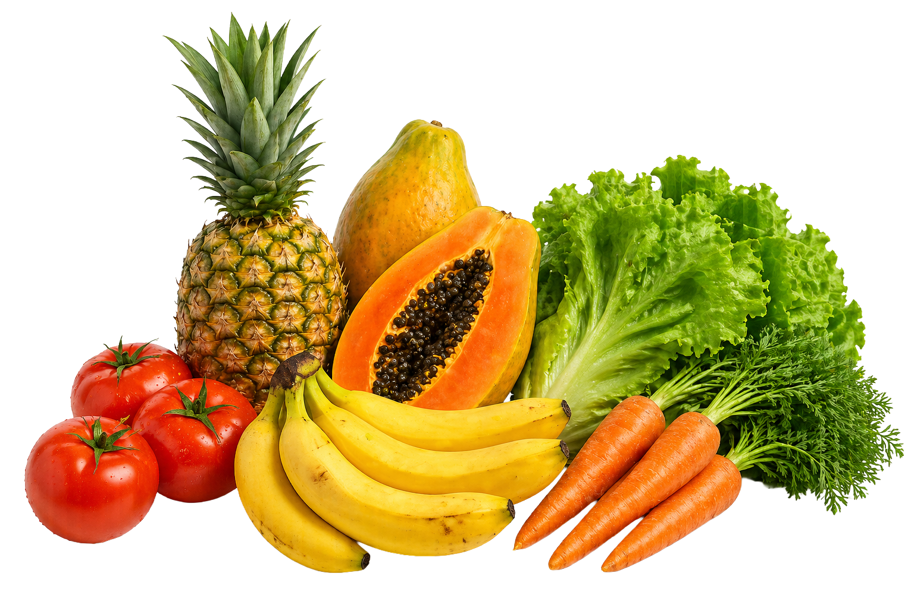
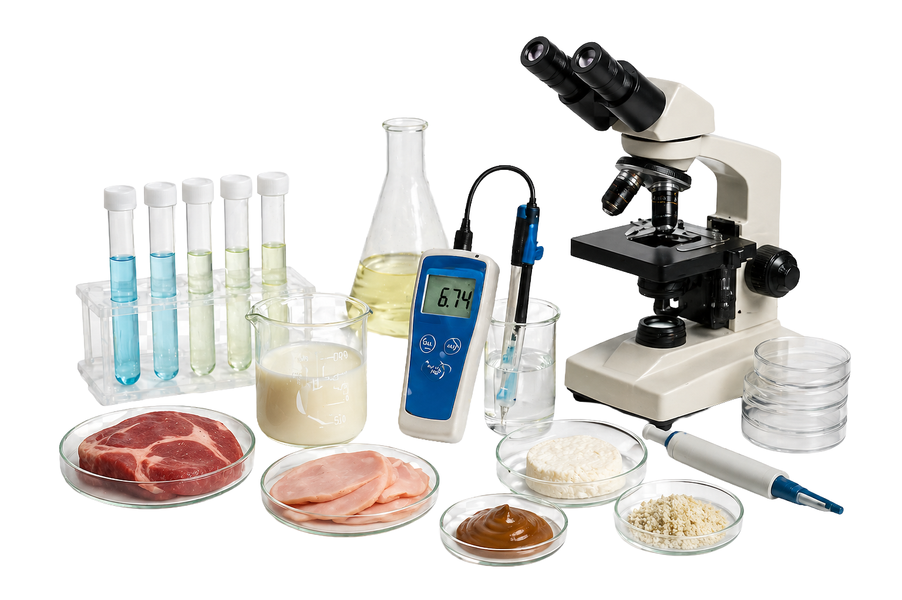
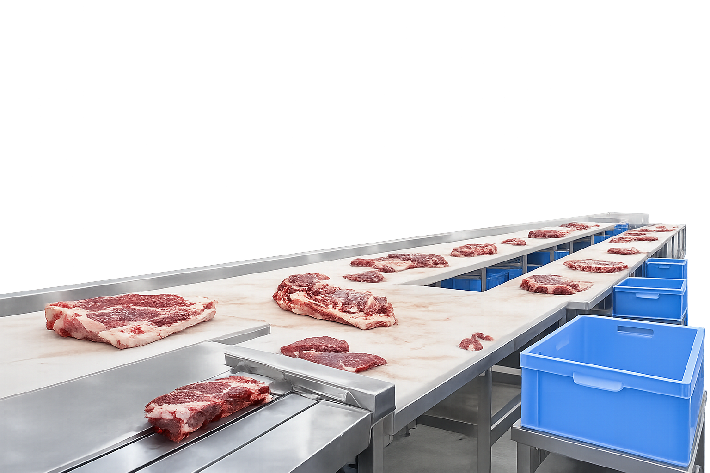

Perfil Profesional
Industrializar la leche, elaborando productos como:
yogurt, manjar, queso, helados, requesón, postres lácteos, etc

Industrializar la carne elaborando productos como:
pollo ahumado, chorizos, jamón, mortadela, paté, etc

Industrializar frutas y vegetales, elaborando productos como:
mermelada, néctar, encurtidos, jaleas, deshidratados, etc

Realizar análisis básicos de materias primas y productos terminados

Asegurar la higiene en alimentos y en procesos de fabricación

Colaboración en grupos de investigación
Velar por el cumplimiento de normas de salubridad y seguridad
que garanticen la integridad de personas y equipos
Operar eficazmente los equipos
 Primero de Mayo
Primero de Mayo